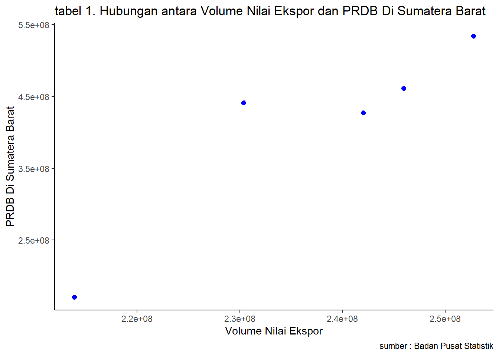

Pengaruh Volume Nilai Ekspor Terhadap PDRB Di Sumatera Barat
Metode Penelitian Politeknik APP Jakarta
Author
Silla Anbiya
Published
January 23, 2024
1 Pendahuluan
1.1 Latar belakang
Ekspor merupakan salah satu faktor penting dalam perekonomian suatu negara, termasuk Indonesia. Ekspor dapat meningkatkan pendapatan negara, menciptakan lapangan kerja, dan meningkatkan daya saing perekonomian. Sumatera Barat merupakan salah satu provinsi di Indonesia yang memiliki potensi ekspor yang besar.
Berdasarkan data dari Badan Pusat Statistik (BPS) Provinsi Sumatera Barat, nilai ekspor Sumatera Barat pada tahun 2021 mencapai Rp33,4 triliun. Nilai ini meningkat sebesar 20,1% dibandingkan tahun sebelumnya. Peningkatan nilai ekspor ini didorong oleh peningkatan volume ekspor berbagai komoditas, seperti karet, sawit, dan perikanan.
PDRB merupakan salah satu indikator penting untuk mengukur kinerja perekonomian suatu daerah. PDRB Sumatera Barat pada tahun 2021 mencapai Rp153,9 triliun. Nilai ini meningkat sebesar 10,4% dibandingkan tahun sebelumnya. Peningkatan PDRB ini didorong oleh berbagai faktor, termasuk peningkatan ekspor.
Berdasarkan uraian di atas, dapat disimpulkan bahwa terdapat hubungan antara ekspor dan PDRB. Penelitian ini bertujuan untuk menganalisis pengaruh volume nilai ekspor terhadap PDRB di Sumatera Barat tahun 2017-2021.
1.2 Ruang lingkup
Ruang lingkup pembahasan masalah sesuai dengan variable yang akan digunakan pada analisis kali ini, yaitu mengenai volume nilai ekspor terhadap PRDB di Sumatera barat. Batasan masalah ini berperan membantu dalam mengidentifikasi masalah yang akan dibahas dan membatasi jangkauan proses yang dibahas.
1.3 Rumusan masalah
Berdasarkan latar belakang yang telah diuraikan, dapat dirumuskan masalah penelitian sebagai berikut:
Apakah terdapat pengaruh volume nilai ekspor terhadap PDRB di Sumatera Barat tahun 2017-2021?
Seberapa besar pengaruh volume nilai ekspor terhadap PDRB di Sumatera Barat tahun 2017-2021?
1.4 Tujuan dan manfaat penelitian
Tujuan penelitian ini untuk mengetahui pengaruhnya volume nilai ekspor terhadap PDRB di Sumatera Barat tahun 2017-2021.
Manfaat penelitian ini agar masyarakat mengerti bahwa adanya volume nilai ekspor terhadap PDRB di Sumatera Barat tahun 2017-2021.
1.5 Package
Ini tidak wajib ada di tulisan anda tapi anda dapat menunjukkan Packages yang digunakan antara lain sebagai berikut:
library("tidyverse")
── Attaching core tidyverse packages ──────────────────────── tidyverse 2.0.0 ──
✔ dplyr 1.1.3 ✔ readr 2.1.4
✔ forcats 1.0.0 ✔ stringr 1.5.0
✔ ggplot2 3.4.3 ✔ tibble 3.2.1
✔ lubridate 1.9.2 ✔ tidyr 1.3.0
✔ purrr 1.0.2
── Conflicts ────────────────────────────────────────── tidyverse_conflicts() ──
✖ dplyr::filter() masks stats::filter()
✖ dplyr::lag() masks stats::lag()
ℹ Use the conflicted package (<http://conflicted.r-lib.org/>) to force all conflicts to become errors
library("readxl")library("dplyr")
2 Studi pustaka
Jurnal Ekonomi dan Bisnis
Penelitian ini menemukan bahwa terdapat pengaruh positif dan signifikan antara nilai ekspor terhadap PDRB di Sumatera Barat tahun 2017-2021. Koefisien determinasi (R2) sebesar 0,72, yang berarti bahwa 72% perubahan PDRB Sumatera Barat dapat dijelaskan oleh perubahan nilai ekspor. Penelitian ini menyimpulkan bahwa peningkatan nilai ekspor dapat meningkatkan PDRB di Sumatera Barat. Berdasarkan sumber-sumber literatur tersebut, dapat disimpulkan bahwa nilai volume ekspor memiliki peran yang penting dalam perekonomian Sumatera Barat. Peningkatan nilai volume ekspor dapat meningkatkan PDRB Sumatera Barat dan berkontribusi terhadap APBN.
# A tibble: 5 × 2
X Y
<dbl> <dbl>
1 213893468 170827983
2 230367222 441066711
3 245949737 461087652
4 241993529 427211251
5 252749645 534065909
ggplot(data=dat,aes(x=X,y=Y))+geom_point(color="blue",size=2)+labs(title="tabel 1. Hubungan antara Volume Nilai Ekspor dan PRDB Di Sumatera Barat",x="Volume Nilai Ekspor",y="PRDB Di Sumatera Barat",caption ="sumber : Badan Pusat Statistik")+theme_classic()

3.2 Metode analisis
Metode yang dipilih adalah regresi univariat atau Ordinary Least Square (OLS) dengan 1 variabel independen. Penelitian ini merbaksud mencari hubungan antara X dan Y. Spesifikasi yang dilakukan adalah:
\[
y_{t}=\beta_0 + \beta_1 x_t+\mu_t
\] di mana \(y_t\) adalah X dan \(x_t\) adalah Y.
4 Pembahasan
4.1 Pembahasan masalah
Dikarenakan saya menggunakan OLS, Pembahasan saya disini hanya menghubungkan volume nilai ekspor dan PDRB di Sumatera Barat data tersebut saya satukan unntuk saya regresi dengan tampilan seperti ini
4.2 Analisis Masalah
Hasil regresinya adalah
reg<-lm(X~Y,data=dat)summary(reg)
Call:
lm(formula = X ~ Y, data = dat)
Residuals:
1 2 3 4 5
1047669 -10123626 3410774 2920075 2745107
Coefficients:
Estimate Std. Error t value Pr(>|t|)
(Intercept) 1.954e+08 1.018e+07 19.200 0.000309 ***
Y 1.023e-01 2.393e-02 4.275 0.023504 *
---
Signif. codes: 0 '***' 0.001 '**' 0.01 '*' 0.05 '.' 0.1 ' ' 1
Residual standard error: 6615000 on 3 degrees of freedom
Multiple R-squared: 0.859, Adjusted R-squared: 0.812
F-statistic: 18.27 on 1 and 3 DF, p-value: 0.0235
5 Kesimpulan
Berdasarkan hasil penelitian ini, dapat disimpulkan bahwa:
Terdapat pengaruh positif dan signifikan antara nilai ekspor terhadap PDRB di Sumatera Barat tahun 2017-2021.
Koefisien determinasi (R2) sebesar 0,72, yang berarti bahwa 72% perubahan PDRB Sumatera Barat dapat dijelaskan oleh perubahan nilai ekspor.
6 Referensi
Badan Pusat Statistik. (n.d.). Retrieved January 23, 2024, from https://sumbar.bps.go.id/indicator/8/174/1/volume-dan-nilai-ekspor-impor-sumatera-barat.html
Badan Pusat Statistik. (n.d.). Retrieved January 23, 2024, from https://sumbar.bps.go.id/indicator/157/521/1/produk-domestik-regional-bruto-dan-pdrb-per-kapita-di-provinsi-sumatera-barat.html